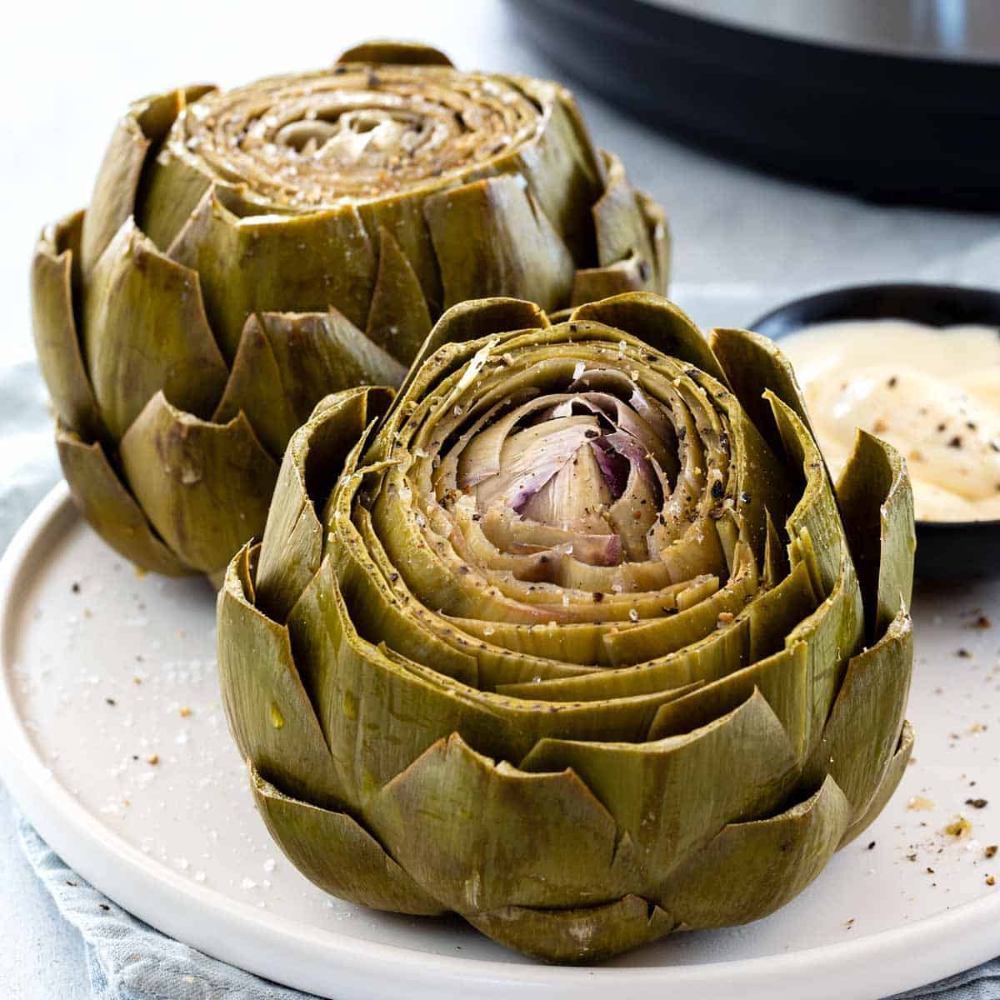

Simple and delicious steamed artichokes. Serve these with melted butter for dipping. You will need a pan with a steamer insert.
- 2 whole artichokes
- 2 tablespoons butter
- 2 cloves garlic, sliced
- salt and pepper to taste
- Step 1
Fill the pan with just enough water to cover bottom. Bring to a full boil over high heat. While water is heating, trim and discard the stems and tough outer leaves of artichokes. Tuck slivers of butter and slices of garlic into artichoke leaves.
- Step 2
When water is boiling, place steamer insert in pot and set artichokes in steamer, stem-side down. Cover pot with lid and allow artichokes to steam for approximately 20 minutes, until tender.